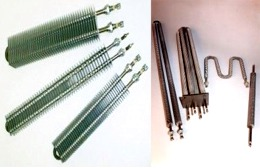
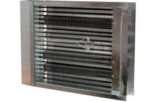
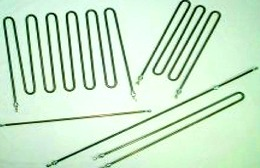
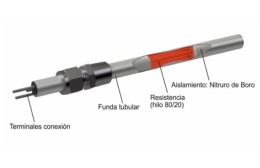
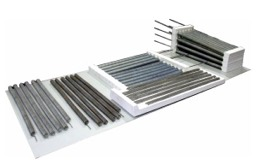
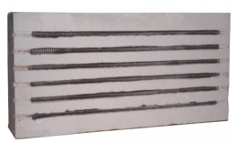
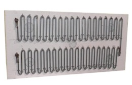

Resistencias para calentamiento de aire. BROTOTERMIC, S.L.
Resistencias para calentamiento de aire aletadas

Elementos blindados en AISI 304 de Ø8 mm para modelos AL y ALEC y Ø10 mm para modelos ALG y AH con racores engrampados. Tensión normalizada ~230 V. Varias potencias y medidas.
Resistencias con racores aire reforzado
Elementos tubulares blindados en cobre niquelado o acero inoxidable AISI 304L ó AISI 321 de Ø8 mm. Racores de latón de M-13 x 1,25 mm, soldados al tubo con aleación de plata. Tensión normalizada ~230 V
Baterías eléctricas.
ALBAT, aleta rectangular

Marco en chapa de Fe galvanizado. Opcionalmente y bajo pedido, chasis en acero inoxidable. Caja de conexiones desmontable. Elementos calefactores tubulares blindados en acero inoxidable AISI 304 de Ø8 mm, racores engrampados de acero zincado de M12. Aleta de chapa aluminizada de 25 x 50 mm.
Baterías eléctricas.
ALBAT, aleta helicoidal
Marco en chapa de Fe galvanizado. Opcionalmente y bajo pedido, chasis en acero inoxidable. Grado de protección contra la humedad IP40. Nuevo sistema de caja de conexiones con apertura abatible sin desmontar la tapa.
Baterías eléctricas.
Modelos, aire acondicionado
Chasis en Fe galvanizado. Opcionalmente y bajo pedido, chasis en acero inoxidable. Elementos calefactores con espiral de hilo de aleación de Ni-Cr calidad 80-20, soportados por pasa-muros de esteatita. Varios modelos, potencias y dimensiones.
Baterías eléctricas.
Calentamiento de aire TFAN TMAX
Velocidad de aire mínima para todos los modelos: 2 m/seg. Resistencias fácilmente intercambiables. Alimentación trifásica 3 ~ 400 V con Toma de tierra.Otras potencias, tensiones y dimensiones bajo demanda. Construcción conforme a la norma UNE EN 60335-1.
Conducto cilíndrico
Conducto cilíndrico en chapa de Fe galvanizado. Opcionalmente y bajo pedido, chasis en acero inoxidable. Caja de conexiones de acero pintado con grado de protección a la humedad IP44.
De 1 a 6 resistencias blindadas en tubo de acero inoxidable AISI 321 ó AISI 304 de Ø6'4 mm para los modelos monofásicos. Termostato de seguridad incorporado de 85 °C.
Resistencias para horno y estufa

Elementos tubulares blindados en acero inoxidable AISI 304 ó AISI 321 de Ø10 mm. Borne BM4-P de M4. Racores engrampados de acero zincado, rosca M14 paso 1'25 mm . Tensión normalizada ~230 V. Varias potecias y dimensiones.
Resistencias de Nitruro de Boro.

Nueva tecnología de construcción de resistencia eléctricas calefactoras.
Reducción de costes, ahorro de peso y dimensiones del elemento calefactor a igualdad de potencia.
Mejora la transferencia de calor. Para trabajar a temperaturas elevadas, hasta 1000°C. Posibilidad de fabricarlas para ambientes clasificados Atex.
Fabricaciones especiales consultar.
Resistencias Espiraladas para Hornos Industriales

Resistencias con aleación de hilo tipo Kanthal A1, Kanthal AF y Kanthal APM. Alta resistividad y capacidad para soportar altas densidades de carga. Hasta Temperaturas de 1425°C.
Resistencias con aleación NiCr, buenas propiedades frente a la oxidación y corrosión. Ara temperaturas hasta 1250°C
Sistemas Resistencias para Tubos Radiantes
Sistema completo de resistencia, varillas y piezas cerámicas que permiten utilizar elevadas cargas utilizando hilos de gran diámetro.
Paneles Calefactores. Resistencias de hilo bobinado

Resistencias de hilo bobinado y embebido parcialmente en hormigón refractario para formar un conjunto calefactor autoportante.
Pueden ser utilizados para temperaturas de horno de has 1100°C.
Fabricaciones a medida, en diferentes formas.
Sistemas Combinados

Paneles de fibras especiales donde se cuelgan mediante sistema de ganchos resistencias de hilo ondulado. La temperatura máxima de trabajo de estos sistemas es de 1200°C
Aerotermo Industrial ATEX
Aerotermo portátil de aire caliente, gama MFH, para áreas peligrosas clasificadas ATEX.
Adecuado para temperaturas ambiente de -40°C hasta +40°C. Versiones en 6KW y 3KW